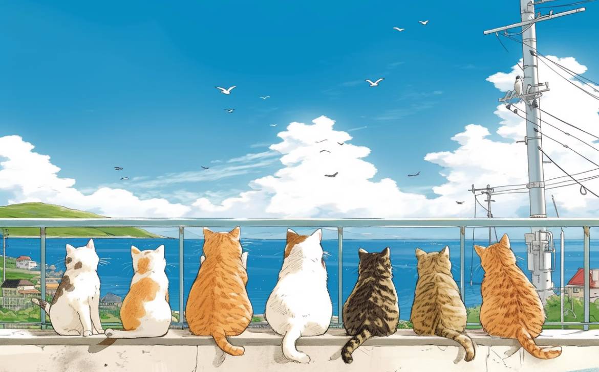
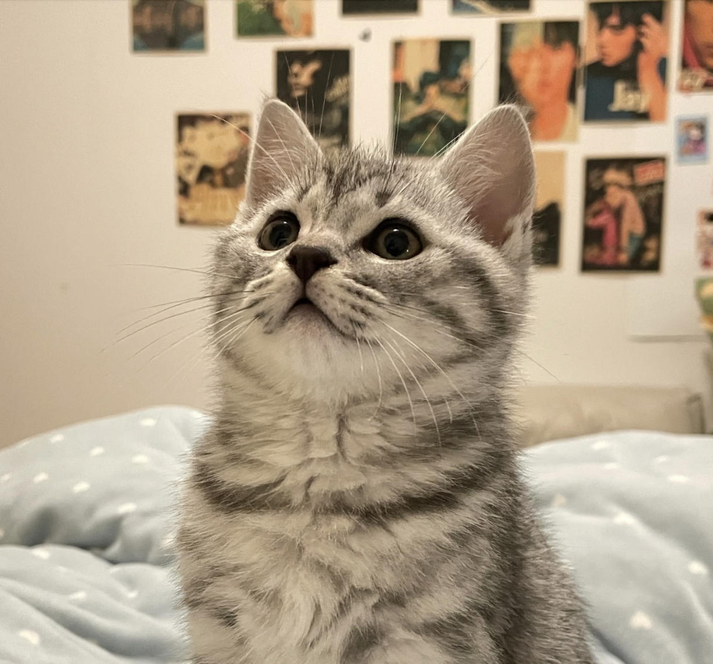
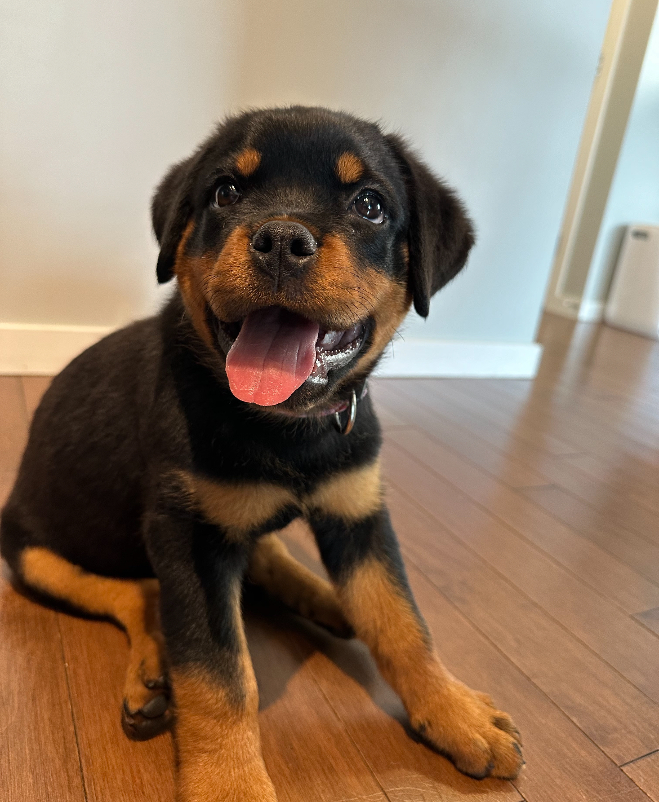
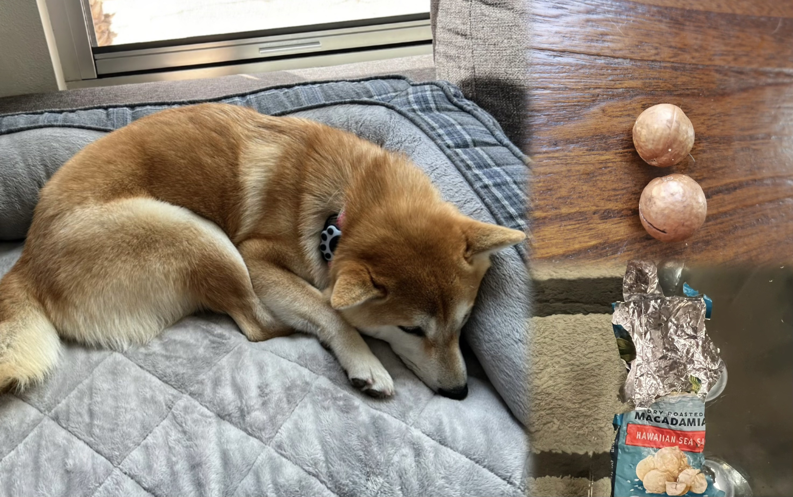
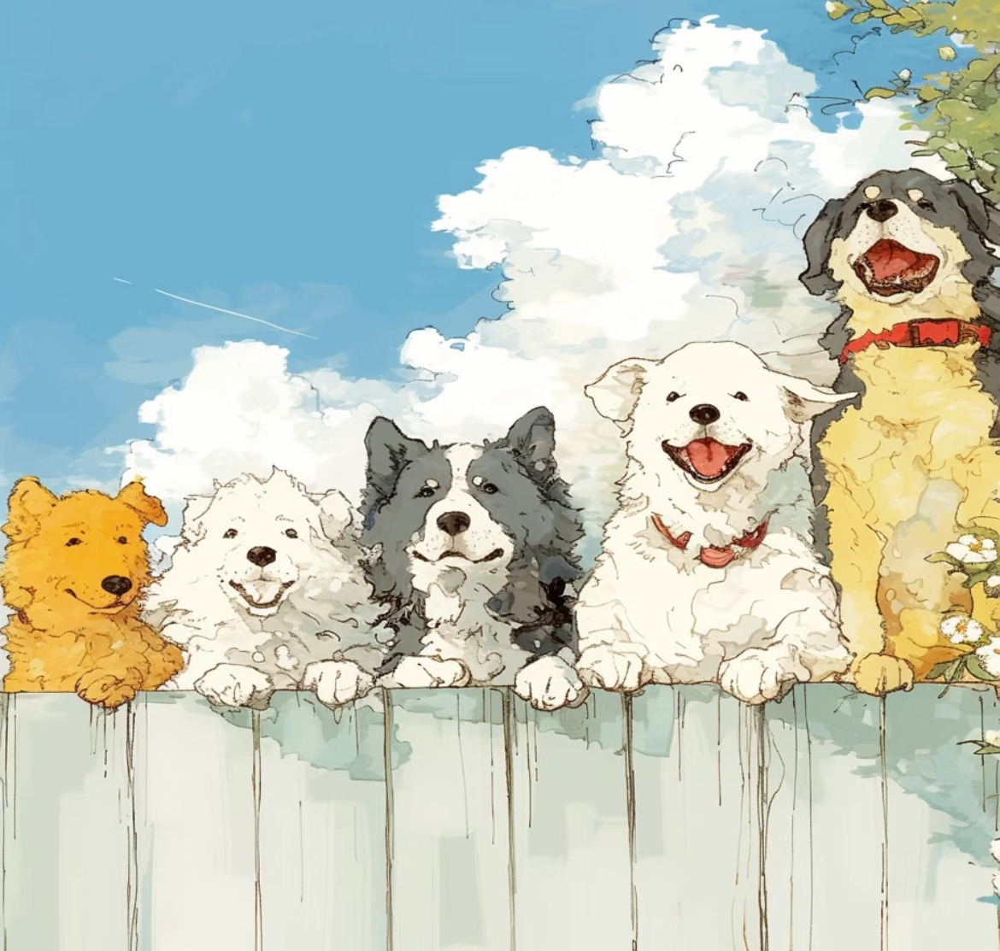
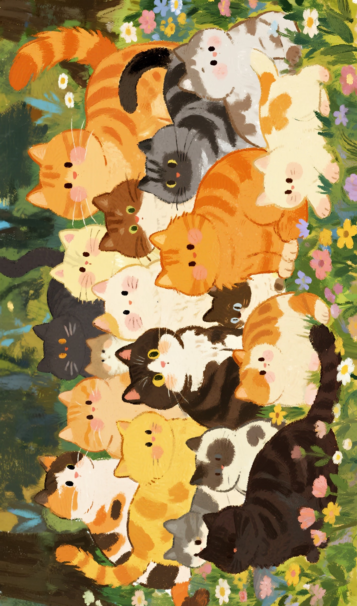

Five Human Foods That Are Toxic To Dogs
Chocolate, grapes, onions and macadamia nuts can cause vomiting, fever and worse in dogs. Learn the early warning signs and what to do in the first ten minutes after an accidental snack.


About Us
PawCare is a non-profit adoption platform for stray animals. We work with local shelters, foster families and volunteer vets to rescue abandoned cats, dogs, birds and small pets, give them medical care and social training, and then match them with responsible owners. A good match is built on honest screening, written agreements and follow-up visits — not on a quick handover.
Every animal is treated, vaccinated and microchipped before it is listed, so you know exactly what health condition you are taking home.
We look at your home, your time and your routine, then suggest the pets that will truly fit — not just the cutest photo on the list.
Free behaviour advice, a starter food pack and a 30-day check-in call keep the first month calm for both you and your new companion.
Animals
2 years · Golden Retriever · Neutered · Vaccinated
Gentle and calm, great with children and other dogs. Loves water and long walks.
1 year · British Shorthair · Neutered · Vaccinated
Quiet and curious, already litter-trained. Perfect for apartment living.
3 years · Mixed Breed · Neutered · Vaccinated
Rescued from the street last winter. Loyal, alert and walks nicely on a leash.
2 years · Cockatiel · Hand-tamed
Whistles happily and steps onto your finger. Needs an owner who is home often.

Dog8 months · Rottweiler · Vaccinated
Friendly but strong. We are looking for an experienced owner with a fenced yard.
10 months · Hamster · Health-checked
Cheerful and easy to handle. Comes with a cage, wheel and a starter food pack.
All profiles are updated weekly by our shelter partners. Adoption is free of charge.
Stories

Chocolate, grapes, onions and macadamia nuts can cause vomiting, fever and worse in dogs. Learn the early warning signs and what to do in the first ten minutes after an accidental snack.
Large breeds like Rottweilers need proper daily exercise to stay calm at home and healthy at any age.

Give a rescued pet one quiet room, one routine and plenty of patience before introducing the whole family.

Flaky skin, bald patches and constant scratching are common signs — check weekly and treat with a vet.
Contact
Tell us a little about yourself and we will reply within two working days with the pets that fit your home.